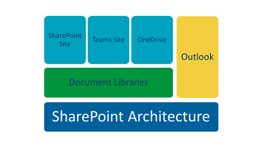

Microsoft Office 365 Groups is a suite of applications designed to help foster team interaction and collaboration. Included in Office Groups are Microsoft SharePoint, Microsoft Teams, Microsoft OneDrive for Business, and Microsoft Outlook. All of these applications are essentially different user interfaces to the underlying SharePoint architecture.
The following diagram shows how the underlying SharePoint architecture is accessed through the SharePoint site, the Teams site, OneDrive, or Outlook.

For more information about Office Groups, refer to Office Groups 365 in the KM knowledge base.